- DAX25-20-03【書籍】 AI白書2019_第3章利用動向
- 3.1 総論
- 2016年は、ディープラーニングが「AI第三次ブーム」の大きな原動力となったが、2017～2018年には、AIはブームに留まらず具体的利用事例、先進事例が出始めている。
- ディープラーニングについては自動運転、医療、金融のファンド運用などの領域において研究開発が進んでいる。
- 3.2 技術分野別のディープラーニングの利用動向
- はじめに
- ディープラーニングの登場によるAIの高度化で、まず、画像認識や音声認識等の分野において、従来の方法'1の精度を凌駕するなど様々な成果が得られ、その技術の産業での応用が進んでいる。
- ■図3-2-1デイープラーニングの登場によるAlの高度化とそれによる産業や社会への影響(2018年版） ※2
- 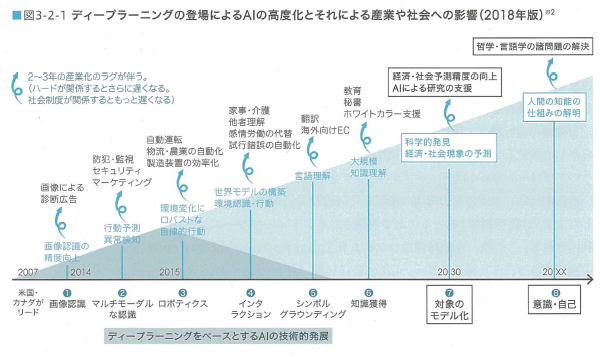
- 今後もディープラーニングの技術革新は一層進むことが期待され、産業側の適用領域も拡大すると予見される。
- しかしながら、ディープラーニングが効果を発揮するためには、学習するためのデータの収集・整備に加え、フィードバックする側の機械等の整備や業務プロセスの改革等を行う必要があり、適用領域によっては多額の投資が必要となる。
- そのため、ディープラーニングに関わる技術革新のスピードは著しい一方で、実用化の面では、導入効果と投資金額のバランスにより段階的に導入が進んでいくことが予想される。
- 3.2.1 認識技術の利用動向
- (1)画像認識技術の応用動向
- ①走行環境の認識
- 現在の自動走行実現へのアプローチの多くはディープラーニングを中心とした機械学習によるものが中心となっている。
- 自動走行は、車両の周辺環境の情報を「①認識（走行環境理解）」し、今後の「②行動を決定（判断）」した上で「③走行制御」を行うことで実現される。
- ディープラーニングは、主に車外環境の①認識に利用される。この際、全地球測位システム(GlobalPositioning System;GPS)や地理空間情報、可視光カメラ、ミリ波レーダー、LiDAR(Light Detection and Ranging)など様々なセンサーやデータを用いて車外の移動体や障害物等を検知する取組みが行われている（図3-2-2)
- ■図3-2-2自動走行の仕組みの例
- 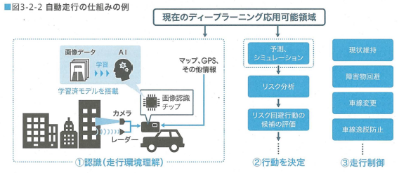
- ②医用画像の認識と診断への応用
- 医療分野においては、患者の状態を客観的に判断するために、血液検査、心電図検査、画像検査など種々の検査が行われている。
- 医用画像の診断支援へのコンピューターの活用は、こうした課題の解決や医師不足等の解決につながるといわれており、1980年代から研究・実用化されてきたが、近年のディープラーニングによる画像認識精度の向上により、その実装が加速するものとみられている。
- また、医療分野では症例等に関する医用画像の整備が進められており、研究機関や企業等はこれらの医用画像に対してディープラーニングを適用する取組みを進めている。
- ③その他
- 例えば、防犯カメラから取得した動画像に対してディープラーニングを適用することで、都市や施設の安全性を高める取組みや事故画像を解析することで損害調査の効率化を高める取組みなどが進んでいる。
- これらの領域におけるディープラーニングを含めたAIの活用については、「3.3国内における利用動向」と「3.4海外における利用動向」で紹介する。
- (2)音声・言語認識
- ディープラーニングの登場により音声認識や文章認識・生成等に関する技術の実用が一
層進み、市場での利用が始まっている。 - ①音声認識・対話
- ■図3-2-3音声認識の応用イメージ
- 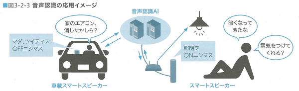
- ■表3-2-3音声認識・対話関連用途にティープラーニングを応用する取組み例
- 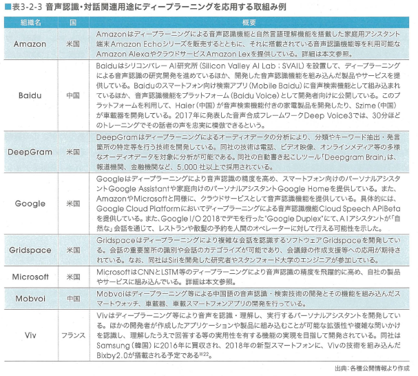
- ②機械翻訳
- ディープラーニングを用いた言語・音声への取組みとして機械翻訳が大きな成果を挙げている。
- その代表的な例は、2016年9月にGoogleが発表した翻訳システムGoogleNeural Machine Translation (GNMT)である。
- Googleは翻訳サービス開始当初からフレーズ単位で翻訳する統計的機械翻訳(PhraseBasedMachine Translation; PBMT)を採用していたが、新たな翻訳システムGNMTにおいてディープラーニングにより文章全体を翻訳単位としてとらえることで、従来のアプローチ(PBMT)から翻訳の誤りを55~ 85%低減する等、性能を大幅に向上させている。
- Googleによると、GNMTは英語→スペイン語、フランス→英語等の一部のケースにおいて人間が行う翻訳に近い精度に達しているという。
- Googleが開発したGNMTは同社の翻訳サービスGoogleTranslationに採用されているほか、クラウドサービスGoogleCloud Platformの機能の一部として提供されている。
- ■表3-2-4機械翻訳用途にディープラーニングを応用する取組み例
- 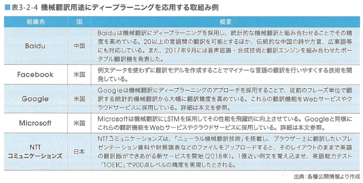
- ③文章生成
- 画像、テキスト、数値から自然な文章やメッセージ性の高いキーワードを生成する等の技術開発も
進んでいる。こうした技術は、報道記事の生成やWebサービスのコンテンツ管理等に利用され始め
ている。 - ■表3-2-5文章生成関連用途にデイープラーニングを応用する取組み例
- 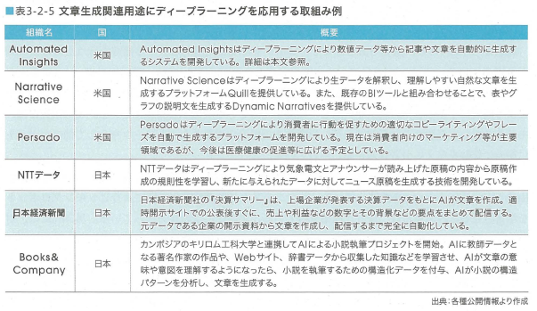
- Automated Insights (米国）
- Automated Insightsはデイープラーニングにより数値データ等から記事や文章を自動的に生成するシステムを開発している。詳細は本文参照。
- Narrative Science (米国）
- Narrative Scienceはディープラーニングにより生データを解釈し、理解しやすい自然な文章を生成するプラットフォームQuillを提供している。
- また、既存のBlツールと組み合わせることで、表やグラフの説明文を生成するDynamicNarrativesを提供している。
- Persado (米国）
- Persadoはディープラーニングにより消費者に行動を促すための適切なコピーライティングやフレーズを自動で生成するプラットフォームを開発している。
- 現在は消費者向けのマーケティング等が主要領域であるが、今後は医療健康の促進等に広げる予定としている。
- NTTデータ (日本）
- NTTデータはディープラーニングにより気象電文とアナウンサーが読み上げた原稿の内容から原稿作成の規則性を学習し、新たに与えられたデータに対してニュース原稿を生成する技術を開発している。
- 日本経済新聞(日本)
- 日本経済新聞社の『決算サマリー』は、上場企業が発表する決算データをもとにAlが文章を作成。
- 適時開示サイトでの公表後すぐに、売上や利益などの数字とその背景などの要点をまとめて配信する。
- 元データである企業の開示資料から文章を作成し、配信するまで完全に自動化している。
- Books&Company(日本)
- カンポジアのキリロム工科大学と連携してAlによる小説執筆プロジェクトを開始。
- Alに教師データとなる著名作家の作品や、Webサイト、辞書データから収集した知識などを学習させ、Alが文章の意味や意図を理解するようになったら、小説を執筆するための構造化データを付与、Alが小説の構造パターンを分析し、文章を生成する。
- 3.2.2 運動の習熟
- 強化学習とディープラーニングを組み合わせた深層強化学習と呼ばれる手法により、ロボットや機械の動作（運動）を習熟させる研究開発が始まっている。
- ■表3-2-6運動の習熟関連用途にティープラーニングを応用する取組み例
- 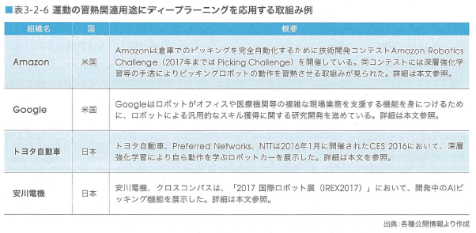
- ■図3-2-4 2017国際ロポット展におけるデイープラーニングを利用したピッキングのテモ※27
- 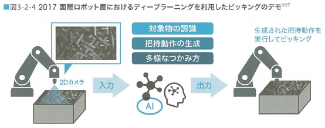
- ディープラーニングにより機械やロボット等の動作を習熟させる取組みが進んでいるが、多くは限定された空間やタスクでの検証段階である。
- 無限の事象が存在する実空間の課題に適応した高度な技術に至るには、さらなる研究開発が必要と考えられる。
- 3.2.3 言語の意味理解と生成
- (l)意味理解
- 運動の習熟の次のステップとして言語の意味理解の実現が期待されている。「2.3自然言語処理」で示したとおり、ディープラーニングにより抽出した高次の特徴量を言語と紐づけることで、言語理解や自動翻訳、さらには言語からの知識獲得までへと発展することが期待される。
- Google
- Googleの研究チーム(GoogleBrainチーム）はディープラーニングにより文意を理解して文章を要約することを目的としたテキスト要約(Textsummarization)の研究開発を進めている。これば言語の意味理解につながる基礎研究の一例である。
- Googleは文章要約の最新研究成果として、2016年8月にジョンズ・ホプキンス大学(JohnsHopkins University、米国）で作成された英語のニュース記事l万件からなるデータセットAnnotatedEnglish Gigawordにもとづく試行結果を発表している,28。
- GoogleのTextsummarizationは本文から単語を抜粋して要約する「抜粋による要約(extractivesummarization)」ではなく、内容をある程度書き換えたうえで要約する「抽象的な要約(abstractivesummarization)」の手法を採用している。
- (2)自然な会話の実現(GoogleDuplexの衝撃）
- 言語の意味理解と生成に関して、難易度が高いとされているタスクの一つに、人間との自然な
対話を継続することが挙げられる。 - Googleは、開発者向けカンファレンスである「Google1/0 2018」にて、"GoogleDuplex"を発表し、電話を通じて、散髪やレストランの予約を、まるで人間がかけているかのような会話で行うAIサービスをデモした※31。
- 「Google1/0 2018」にて、"GoogleDuplex"を発表
- 自然言語処理とディープラーニング（特にRNNの活用）、音声読み上げを組み合わせたサービスで、これまでにない「自然さ」を実現していることで参加者を驚かせた。システムは会話における反応のスピード（一呼吸置くなどの「間」まで測れる）や、文脈に合わせて、言い方やイントネーションを変化させることができると
- "Google Duplex"や囲碁の"AlphaGo"のように、ディープラーニングに代表される機械学習の進化と既存のサービスとがうまく連動すると、突然飛躍が起きたような気になるサービスが実現さ れるというのが、ディープラーニングの可能性を示している。
- 同時に"GoogleDuplex"の例は、飛躍の裏返しとして「怖さ」の面を伴うが、「怖さ」はその場で体験しないと本当の意味で理解できない、という一例となっている。
- 3.3 国内における利用動向
- 3.3.1 製造業における利用動向
- (1)分野動向
- 製造業は、日本のGDPの2割弱を占める基幹産業であり、他産業への高い波及効果を持つ。米国やドイツ等も次世代型製造業への転換政策を打ち出し、製造業の重要性を見直しつつある。
- 具体的には、ドイツのIndustrie4.0、米国のIndustrialInternet、中国の「中国製造2025」に代表されるAI・IoTによる生産性向上、品質管理・向上、在庫削減、不良品の削減等を目的とした生産革新が進められている。
- 日本政府も、第4次産業革命の技術革新をあらゆる産業や社会生活に取り入れることにより、様々な社会課題を解決するSociety5.0の指針を掲げている。
- このような世界的な潮流の中で、日本の製造業においても新たな工場のスマート化への取り組み‘ が始まっている。工場のスマート化自体は古くから検討されていたテーマであり 1980年代にはFA(Factory Automation)が進展するといった進化を遂げてきた。
- 現在はAIやIoTの活用が重要なテーマとなっている。
- 経済産業省が2017年5月に公表した「『ConnectedIndustries」の具体例（ものづくり／バイオ/AI)」によると、同省が提唱するConnectedIndustriesの「スマートものづくり」の領域においては、デジタル化・グローバル化の進展を背景に、リアルとバーチャルの融
- 合、水平分業・モジュール化の進展、スマイルカーブ現象の加速化という3つの事象が起こっているという（図3-3-1)。
- スマート工場は、これらの方向性を受けて実現されていくものといえる。
- ■図3-3-1デジタル技術によるものづくりの価値の源泉の変化
- 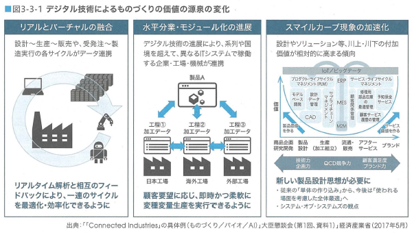
- (2)活用状況
- 工場でのAI活用は、現状では従来型の工場での部分的な活用が中心となっている。
- 中長期的には、IoTデータの分析などの取組みが進展することにより、スマート工場の実現につながると期待される。
- AI活用の具体的分野としては、画像解析による外観検査・検品、工場内の作業監視によるミスの防止、製造設備のセンシングデータを分析した異常検知などが挙げられる。
- まず、外観検査については、ディープラーニング技術などによる高度な画像認識技術を駆使した、活用事例が報告され始めている。
- 一般に外観検査や検品は、マシンビジョン;;,32の設定や調整を行ったうえで自動化するが、多品種小ロット生産や不定形物の場合は、マシンビジョンでは対応しきれず、人の目視で行っている。
- AIを活用することにより目視で行っている検査を自動化できる。
- また、高額で大規模なマシンビジョンの設備ではコストに見合わない場合などでも、AIを活用することで検査を自動化できる。
- 作業員のミス防止のための動きの検知では、本来あるべき作業の動作から外れた動作を行った場合にアラートをあげ、作業のミスを防ぐ。
- 異常検知では、機械の稼働データから正常／異常を判別し、 異常が起きた場合はアラートをあげる。
- あらかじめ異常の閾値を設けなくても、稼働データを学習することで自動的に正常である状態を把握し、そこから外れた状態になると異常と判断することができる。表3-3-1に具体的事例を示す。
- ■表3-3-1製造業におけるAlの活用場面の例
- 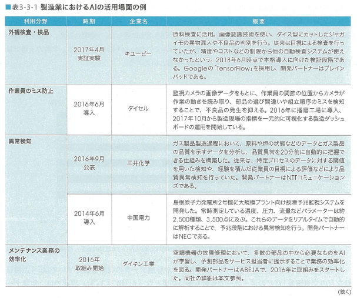
- 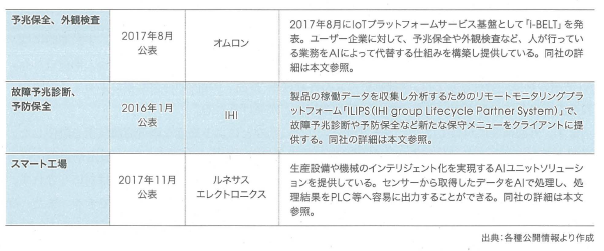
- 製造業のIT化の意識とデータ収集方法の実態
- ■図3-3-2工場現場のIT化の重要性
- 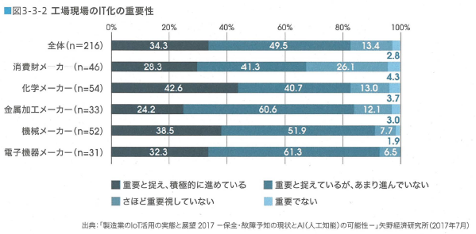
- ■図3-3-3データ収集方法
- 取組み事例：株式会社IHI
- ICT活用による製品・サービスの高度化に取り組む
- 取組み事例：オムロン株式会社
- Alには「人にできないこと」、「人の代替」を期待する
- 取組み事例：ダイキン工業株式会社
- 安定操業を実現するためのスマート工場への取組み
- 取組み事例：ルネサスエレクトロニクス株式会社
- Alユニットソリューションの提供
- 3.3.2 自動車産業における利用動向
- (1)分野動向
- 自動車産業では、自動運転システムの開発が今後の競争領域であり、自動車メーカー関係各社が自動運転システムに関する研究開発投資を行っている。大手自動車メーカー、大手部品メーカーが市場を牽引しているが、AI技術、自動運転技術をコアとするベンチャー企業も登場している。
- ①自動運転への社会的期待
- 政府（内閣官房高度情報通信ネットワーク社会推進戦略本部・官民データ活用推進戦略会議）が平成30年6月に発表した「官民ITS構想・ロードマップ2018」では、自動運転による社会的期待として、「交通事故の削減」「交通渋滞の緩和」「環境負荷の低減」「運転の快適性向上」「高齢者等の移動支援」、さらに自動運転産業の発展による「産業競争力の向上」「関連産業の生産性向上」が挙げられている（図3-3-4)。
- ■図3-3-4自動運転システムによる社会的期待の例
- 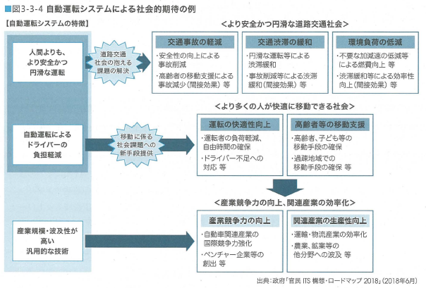
- ②自動運転のレベル・取組み方針
- 自動運転レベルの定義については、内閣府が2018年4月1日に公開した「戦略的イノベーション創造プログラム(SIP)自動走行システム研究開発計画」で、「国際的な整合性を図るため、米SAE Internationalが平成28年9月に定めたSAE }3016の定義を採用する」としており、「自動走行の実現に向けた取組方針Version2.0」などでもこの定義が使用されている（表3-3-2)。
- 本書でも自動運転のレベルについては、この定義に従うものとする。
- ■表3-3-2 SAEの自動運転レベルの定義概要
- 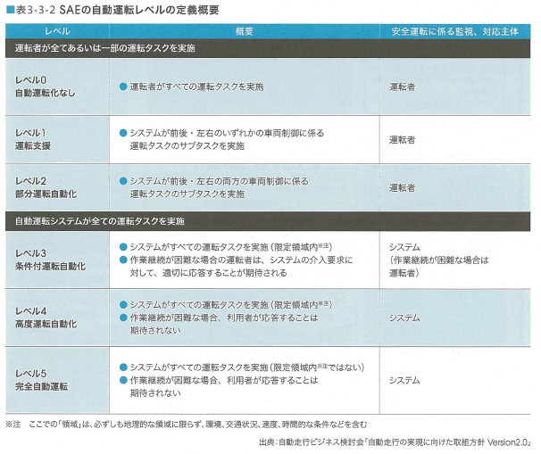
- 技術開発、市場化に関しては、政府各部門で整合をとって、実行計画を作成している。
- まず、SIPの研究計画では、2020年までにハイエンドなシステム(SAEレベル2)を実現し、2020年をめどにSAEレベル3、2025年をめどにSAEレベル4の市場化を行うという目標が掲げられている。
- また、2020年東京オリンピック・パラリンピックが重要なマイルストーンとして位置づけられ、海外への展開を見据え次世代都市交通システム (AdvancedRapid Transit ;A RT)等を実用化する計画となっている。
- また、「官民ITS構想・ロードマップ2018」では、2020年までの実現目標として自家用車については高速道路での準自動パイロット(SAEレベル2に相当）の市場化、移動サービスについては、限定地域での無人自動運転移動サービス(SAEレベル4に相当）という内容が含まれている。
- さらに、経済産業省が平成30年3月に公表した「自動走行の実現に向けた取組方針Version2.0」では、高速道路においては、2020年までに、運転者が安全運転に係る監視を行い、いつでも運転操作が行えることを前提に、加減速や車線変更が可能なSAEレベル2を実現、2020年以降には、SAEレベル3を含む高度な自動走行を実現する見込みとなっている（図3-3-5)。
- 一般道路においては、2020年ごろに国道・主な地方道において、直進運転のレベル2を実現し、2025年ごろには、対象道路拡大や右左折を可能にするなど自動走行の対象環境を拡大する見込みとなっている。
- ■図3-3-5一般車両における自動走行（レベル2,3,4)の将来像
- 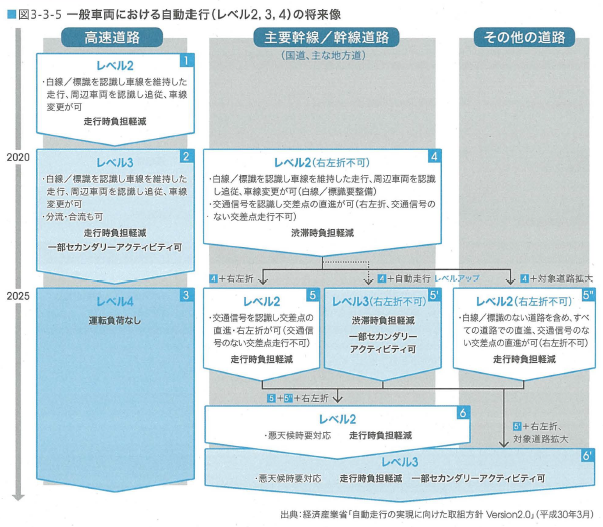
- また市場化を促進するために、「自動走行の実現に向けた取組方針Version2.0」では、今後、我が国が競争力を獲得していくために必要な技術等のうち、企業が単独で開発・実施するにはリソース的、技術的に厳しい分野として、重要10分野を協調領域として特定している（表3-3-3)。
- この中には、セーフティ、サイバーセキュリティ、社会受容性、安全性評価など、社会実装上、重要課題となるものも含まれている。
- ■表3-3-3重要10分野
- 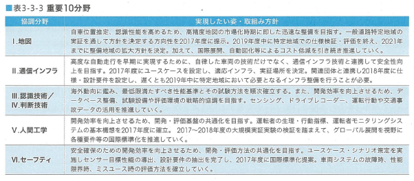
- 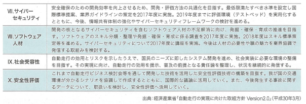
- ③自動運転におけるAl・テータの位置づけ
- 「官民ITS構想・ロードマップ2018」では、将来の自動運転システムにおけるAIの位置づけについて「現在、実証等に利用されている自動運転システムの多くは、外界認識における画像認識等の一部を除き、多くは従来型のソフトウェアによる制御（ルールベース制御）が中心となっているが、今後、市街地などを含め、より複雑な環境での走行を実現すべく、シーン理解・予測、行動計画なども含めて、人工知能化が進んでいくものと考えられる」とされている（図3-3-6のAIの枠内参照）。
- ■図3-3-6将来の自動運転システムにおけるAlの位置づけ
- 上図で示すように、AIは、「外界認識」、「シーン理解＆予測」、またその中でAIが活用するデータとしては、自動運転システムが参照する「ダイナミックマップ」、ータ」などが挙げられる。
- 「センシングデータ」に関しては、車両から見た「外界」を認識するためのカメラやミリ波レーダ、LiDARなどが挙げられる。
- また、車両内環境を捉えるためにカメラやマイク、脈拍センサーなどを置き、搭乗者の生体情報や行動、会話などを把握する研究開発も進んでいる。
- 「ダイナミックマップ」は、車両周辺の歩行者や自転車、対向車などの動き、信号、道路の状況など、刻々と変化する状況をリアルタイムで取得し、高精度な地図に反映させた高精度三次元地図である。
- 2016年6月に自動車メーカー、電機メーカー、地図・測量会社などが共同出資し、ダイナミックマップの整備や実証、運営に向けた検討を行う企画会社「ダイナミックマップ基盤企画株式会社」を設立している。また、2018年1月からは、KDDI、ゼンリン、富士通の3社が、自動運転向けダイナミックマップの生成・配信技術の実証実験を開始する（図3-3-7)。
- 「プローブデータ」は、自動車が把握した自車位置、速度などの情報をアップロードすることにより、渋滞清報などに活用するものであり、ダイナミックマップヘの反映や車車間での活用も研究されている。
- ■図3-3-7ダイナミックマップ基盤企画株式会社の事業領域について
- 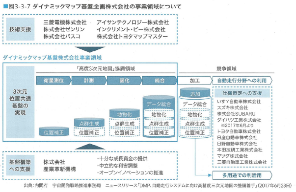
- 自動運転の進展に伴うデータ・アーキテクチャーの変化について、「官民ITS構想・ロードマップ2018」では、以下のように説明している。また、その概念を図3-3-8に示す。
- 自動車内の各種制御が、個別車両内のデータ・知識基盤にもとづく判断も含めて、さらに高度化するだけではなく、
- i)各車両において収集されたプローブデータ、映像データを含む走行知識データの一部が、ネットワークを通じて、外部のクラウド等のデータ・知識基盤に移転・蓄積され、それらのデータは、ダイナミックマップ、人工知能の基盤データに加え、各種ビッグデータ解析等の様々な分野に活用される。
- ii)また、このような多数の各車両から得られたデータに加え、ダイナミックマップに係る高精度3次元地図や走行映像データベース等も含めた外部からのデータ等によって生成される人工知能(AI)などのデータ・知識基盤等の一部が、再びネットワークを通じて各車両に提供され、当該車両における自動運転の判断に必要なデータ・知識等として活用される。
- iii)その際、ネットワークの構造としては、「エッジ／フォグコンピューティングなどのアーキテクチャーが利用される」といった方向に進化していくこととなる。
- ■図3-3-8自動運転システムを巡るデータ・アーキテクチャー（イメージ）
- 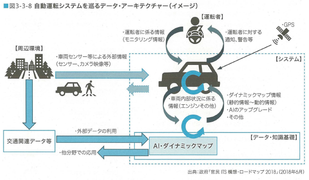
- (2)活用状況
- ①実証実験の動向
- 公道における自動運転の実証実験は、警察庁が2017年6月に策定・公表した「遠隔型自動運転システムの公道実証実験に係る道路使用許可の申請に対する取扱いの基準」（以下「新ガイドライン」）にもとづく。新ガイドラインでは、運転者が緊急時等に必要な操作を行うことができる自動走行システムであること、周囲の道路交通状況や車両の状態を監視（モニター）することなどが要件で、遠隔操作などの機能を備えた自動走行車両が用いられる。
- 以下に、日本における自動運転の実証実験の例を挙げる（表3-3-4)。自動運転の実証実験は、自治体・民間または大学が実施するもの、一般道でのSAEレベル2の市場化を図るラストマイル自動運転（実施は経産省・国交省）、高速道路での物流トラックの隊列走行（経産省・国交省）、SIP事業等（内閣府） 34、国家戦略特区事業（内閣府）、道の駅等を拠点とした自動運転サービス（国交省・内閣府SIP)m3sなど様々な区分で多数実施されている ※36
- ■表3-3-4最近の自動運転の実証実験の例
- 国内の自動運転の活用シーンの背景には、日本の社会的条件が関係する。
- 公共交通機関が発達している都市部と比較して、地方都市では自動車が重要な交通手段となっている。
- しかし、高齢化と過疎化が深刻であり、自家用車の運転も公共交通の存続も難しいことから、自動運転に対する期待が高い。
- 第5章で説明するAI社会実装調査におけるヒアリング調査では有識者から、今後、アジアの国々でも高齢化が進むため、日本の社会に合わせて開発したAIアプリケーションを輸出できるのではないかという意見も出ており、産業競争力としても期待される。
- 取組み事例：株式会社ZMP
- 自動走行タクシーの実現を目指す
- ②自動連転に関するAIチップの動向
- 組み事例：NVIDIA
- ③その他の動向
- ■図3-3-10トヨタ自動車とソフトパンクの連携イメージ
- 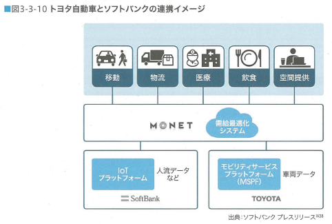
- 3.3.3 インフラにおける利用動向
- (1)分野動向
- 道路、鉄道、空港・港湾、治水、生活インフラなど社会基盤においては、その長寿命化や維持管理の効率化を目的として、異常検知や設備保守運用の高度化などにAIを適用する取組みがみられる。
- (2)活用状況
- ■表3-3-5インフラにおけるAl活用事例
- 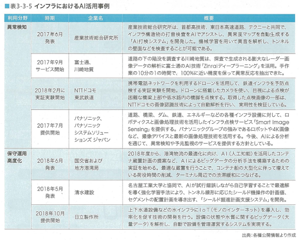
- 3.3.4 農業における利用動向
- (1)分野動向
- 日本の食料自給率（カロリーベース）は38%(2016年度 ※39であり、総農家数は1990年の482万戸から2015年は216万戸に減少しており※40、高齢化が進展するなど、労働力不足も深刻さを増している。
- こうした背景から、農業でのAI活用は、先端的技術の活用による省力化や高品質生産が求められる。
- 農業の分野は、個人の零細事業者が多く高齢化が進んでいるなどの理由から、一部の農業法人を除くと投資余力やIT活用意識が薄く、また利益面からも投資対効果が得にくい。
- そのため、政府の取り組みや補助が期待される。農林水産省は、ロボット技術やICTを活用したスマート農業を実現するため、2013年11月に「スマート農業の実現に向けた研究会」を立ち上げた。
- この研究会では、第4次産業革命における基盤技術であるAIやIoT、ビッグデータ、ロボットなどの技術を農業分野で活用し、生産性の飛躍的な向上、サプライチェーン全体の最適化等を可能にすることで、スマート農業を早期に実現し新たな価値を創出することが検討されている（図3-3-11)。
- ■図3-3-11農業における人工知能やloTの活用の可能性（イメージ）
- 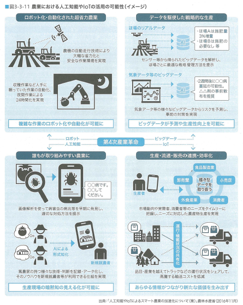
- ■図3-3-12スマート農業国内市場規模推移と予測
- 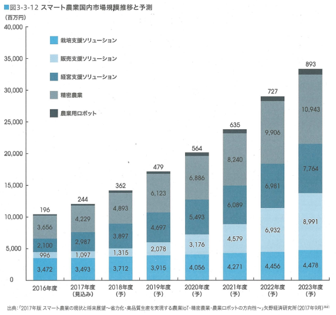
- (2)活用状況
- ■表3-3-6農業でのAl活用事例
- 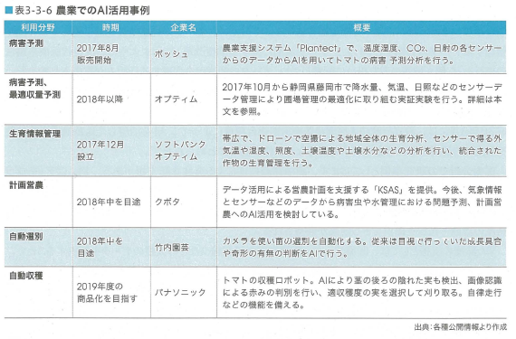
- 3.3.5 健康・医療・介護における利用動向
- (1)分野動向
- (2)活用状況
- ■表3-3-7医療でのAl活用事例
- 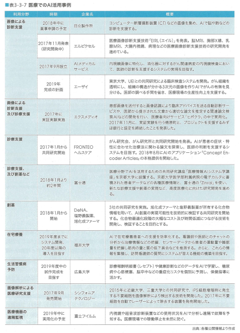
- ■表3-3-8健康、介護でのAl活用事例
- 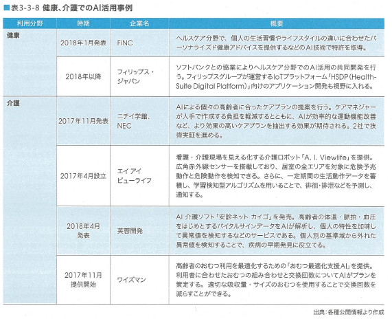
- 3.3.6 防犯・防災における利用動向
- (1)分野動向
- (2)活用状況
- ■表3-3-9防犯・防災分野でのAl活用事例
- 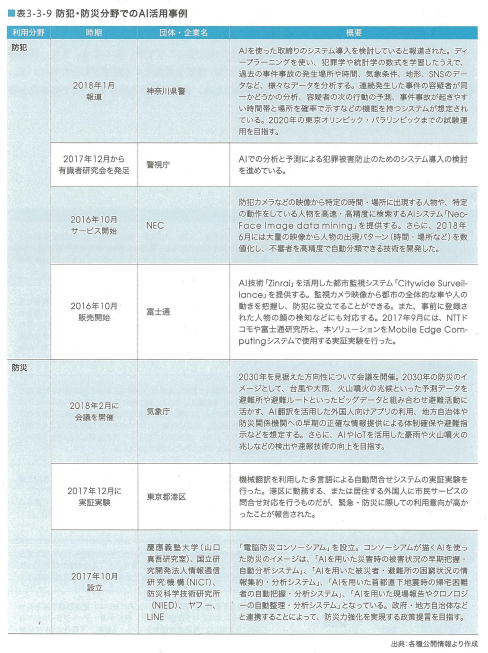
- 3.3.7 エネルギー分野における利用動向
- (1)分野動向
- (2)活用状況
- ■表3-3-10エネルギー分野でのAl活用事例
- 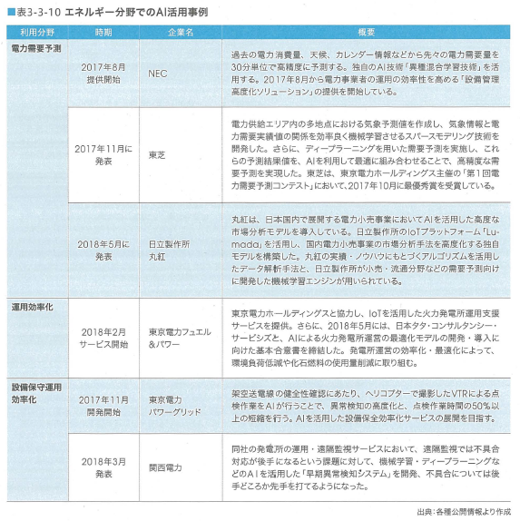
- 3.3.8 教育における利用動向
- (1)分野動向
- 教育分野におけるIT活用が進む中、個人の学習傾向に合わせてプログラムを提供する適応学習（アダプティブ・ラーニング）、解答の採点、学生からの質問の対応などに、AIを応用する取組みがみられる。
- 政府は、「Society5.0時代に向けて、AI、IoT等の革新的技術をはじめとするICT等も活用しながら、持続可能な社会の創り手を確実に育成していく」という方針を掲げている※44。
- 文部科学省、経済産業省、総務省の未来投資会議構造改革徹底推進会合「企業関連制度・産業構造改革・イノベーション」会合（雇用・人材） (2018年2月）で討議が行われた「学校教育におけるICT、データの活用」では、「AI、IoT等の革新的技術を初めとするICTの学校現場での活用」というテーマのもと、「個に応じた指導（アダプティブ・ラーニング）を徹底する」という施策を掲げている。
- また2020年に改訂予定の「学習指導要綱」においても、「主体的・対話的で深い学び（アクティブ・ラーニングの視点からの授業改善）」が基本方針になっており、新しい教育を実現する手段としてICT/ITやAIの活用 が、EdTech (Education x Technology)として着目されている※45。
- (2)活用状況
- ■表3-3-11 教育分野でのAl活用事例
- 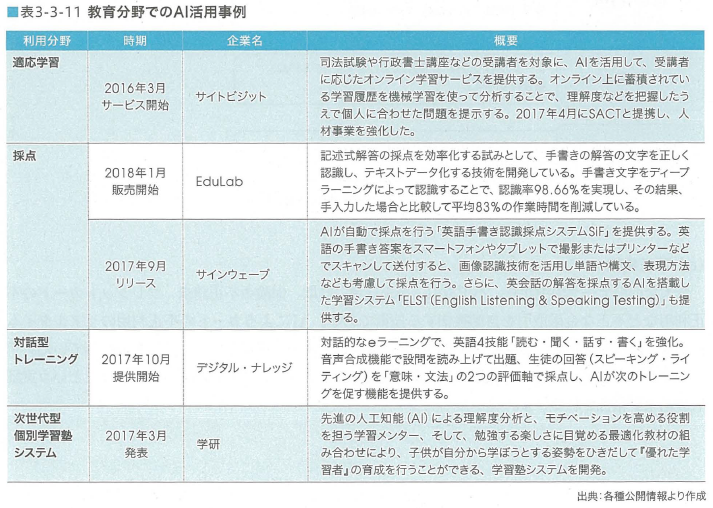
- 3.3.9 金融業における利用動向
- (1)分野動向
- 金融分野におけるAIの活用は、アルゴリズムによる株式取引から資産運用、個人向けの金融サービス、保険サービスまで多岐にわたっている。
- 金融業でのAI活用を概観するうえで欠かせないのが、Fintechの動向である。Fintechは、IT技術を使った革新的な金融商品・サービス創出の潮流を意味し、AIはFintechの中核技術の一つとなる。Fintechは、現在メガバンクが牽引役となっているが、2016年以降は地方創生の推進なども要因として重なり、多くの地方銀行がFintechの取り組みを本格化している。
- (2)活用状況
- 金融業におけるAIの活用領域としては、不正検知、投資・運用、融資などの審査、接客やコールセンターなどの顧客サービスが挙げられる（図3-3-13、表3-3-12)。
- ■図3-3-13金融業のAl活用場面
- 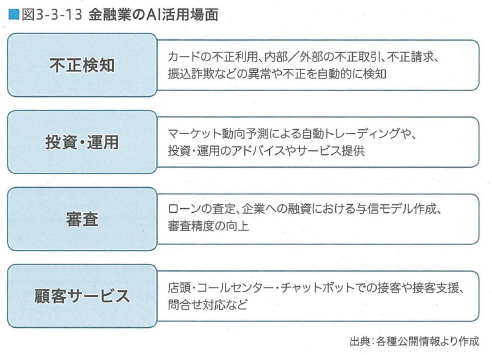
- (a)不正検知
- (b)投資・運用
- (c)審査
- (d)顧客サービス
- ■表3-3-12金融業におけるAlの活用事例
- 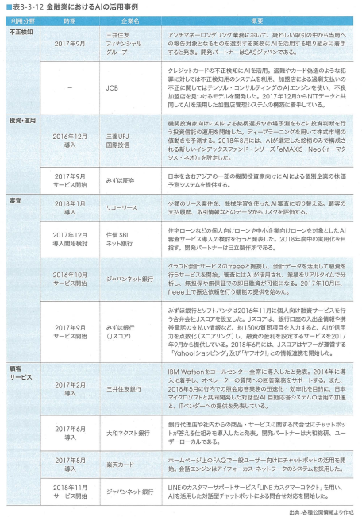
- 3.3.10 物流における利用動向
- (1)分野動向
- (2)活用状況
- ①調達物流
- ■表3-3-13調達物流でのAl活用事例
- 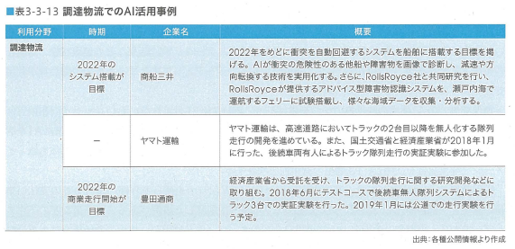
- ②拠点内物流
- ■表3-3-14拠点内物流でのAl活用事例
- 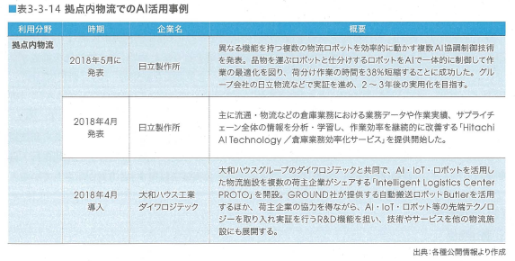
- ③販売物流
- ●表3-3-15販売物流でのAl活用事例
- 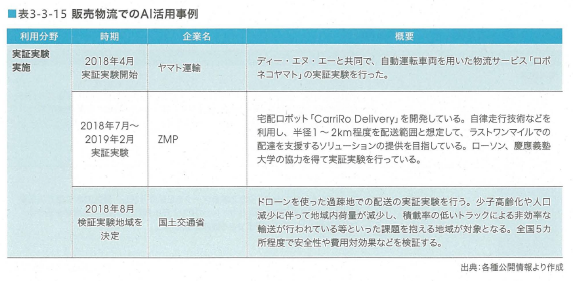
- 3.3.11 流通業における利用動向
- (l)分野動向
- 流通業ではEC市場が拡大し続けている※49。ECでは、顧客データの入手や蓄積が容易であることから、それらのデータを利用し、利益の増大を目的としたAI活用が進んでいる。
- 実店舗においても、店舗内に設置したカメラによる画像取得などデータ取得の方法が多様になってきており、AI活用に利用されるようになってきている。
- 流通業におけるAI利用の最大の目的の一つにはマーケティングや顧客の個別対応などによる売り上げの増大がある。
- 元々、データマイニングにより分析が行われている分野であり、より高い効果を期待してディープラーニングによる分析に取り組む企業が多いとみられる。
- ただし、薄利多売の流通業においては、特に実店舗での導入において、「AIの利用によっていくら売上が上がるのか」という費用対効果が問われる。技術的に、購買清報、位置情報、画像データなどを駆使したレコメンデーションが行えるとしても、単価が安いものの購買促進目的では割に合わない場合も少なくないと考えられる。
- 他方では、店舗スタッフなど、深刻化する労働力不足を補うために、決済や顧客サービス等の分野でAIを活用するという方向性も見られる。
- 流通業では、具体的にどのような成果を得るためにAIを用いるのかというビジョンの設定が求められている段階といえる。
- (2)活用状況
- ■表3-3-16AIを活用したツールの提供事例
- 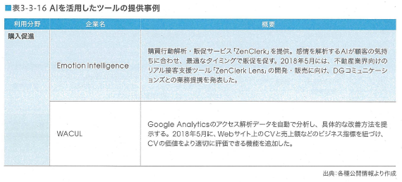
- ■表3-3-17実店舗における流通業でのAl活用事例
- 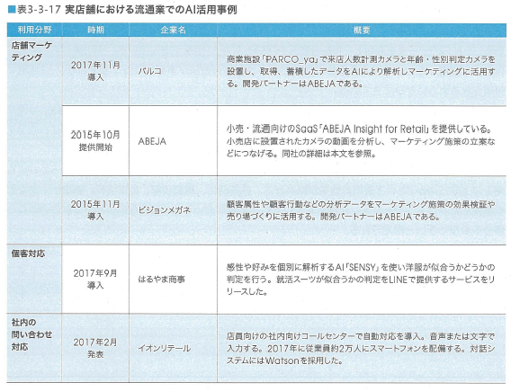

- ■表3-3-18チャットボットの活用事例
- 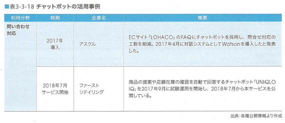
- ■表3-3-19画像認識を活用したネット取引の事例
- 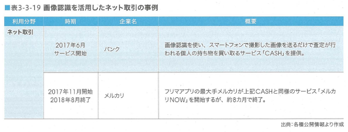
- 取組み事例：株式会社ABEJA
- Alプラットフォーム「ABEJAPlatform」を提供する
- 3.3.12 行政における利用動向
- (1)分野動向
- 政府や地方自治体では、行政サービスのスピードアップ、利便性向上、付加価値の高い業務への注力などを目的としてAIを活用する動きが起きている。
- チャットボットや対話システムによる質問への回答システム、職員向けの内部業務用のシステム、市民に外部公開するシステムなどの実証実験の実施や導入検討が行われている。三菱総合研究所は、個別のシステム開発だけではなく、自治体向けに標準的に利用できるシステムとして「AIによる住民問合せサービス」を開発する。
- 自治体からの要望を吸い上げソリューション開発に活かすことを目的とし、2017年7月に、全国46の地方自治体と「行政情報標準化・AI活用研究会」という組織を立ち上げた。
- (2)活用状況
- ■表3-3-20行政におけるAlの活用事例
- 3.3.13 その他の利用動向
- (1)RPA (Robotic Process Automation)
- RPA (Robotic Process Automation)は、ホワイトカラー職種の業務オペレーションに対する、ソフトウェアロボットによる業務自動化の取組みである。
- これは、操作画面上から処理手順を登録しておくだけで、通常必要となるプログラム開発をせずとも、多様なアプリケーション等を活用し、これまで人が行っていた特定業務を人間同様に処理することができる。
- PRAがAIであるかどうか、については見方が分かれるところである。一般には、狭義のRPA※55と、広義のRPA※56の2つが存在する。
- 広義のRPA(RPAはAIを含むとする）には、3つの段階が存在するとされる（表3-3-21)。
- Class1では、ルール化が可能な定型業務の自動化を、Class2では機械学習やAIを含む一部非定型業務の自動化を、Class3では分析・判断・意思決定などの高度な自動化を実現する。
- 狭義のRPAとは、Class1部分のみを指す。現在、企業で採用され始めているのは、ほぼすべてClass1のRPAである。
- これは、AIというよりExcelでユーザーが登録した作業を自動で繰り返し処理するマクロファイルのようなものである、と表現するのが適当であろう。
- ■表3-3-21 RPAの3つの段階
- 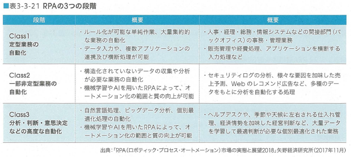
- ■図3-3-14RPA市場規模の推移(2015~2021年度）※57
- 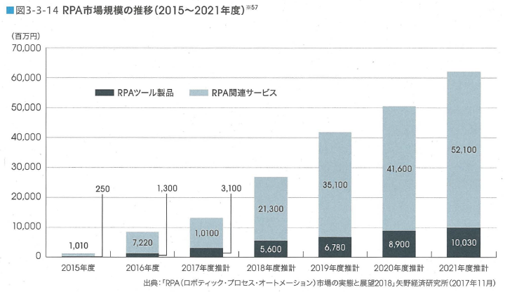
- ■表3-3-22RPA適用領域例（業務領域別）
- 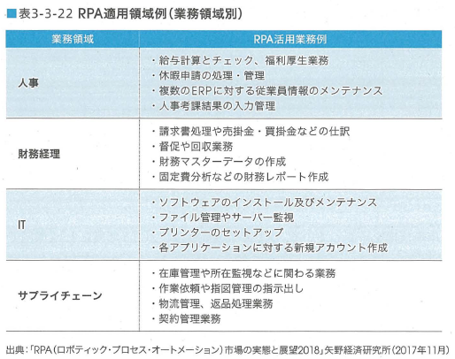
- ■表3-3-23RPA適用領域例（業界別）
- 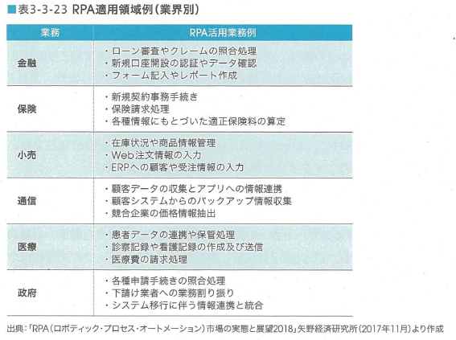
- (2)スマートスピーカー／音声認識
- 2017年は、日本のスマートスピーカー元年となった（表3-3-24)。
- 2017年10月にGoogleの「GoogleHome」、LINEの「ClovaWAVE」、11月にAmazonの「AmazonEcho」が相次いで発売された。
- 米国では、AmazonEchoが2014年、GoogleHomeが2016年に発売されていたが、2017年は日本市場での本格展開が開始されたことになる。
- それぞれ音声認識エージェントを搭載しており、音声入力によって音楽を流したり、検索ができたり、対応するスマート家電のコントロールができたりする。ソニーやオンキヨーなどの国内メーカーもスマートスピーカーを発売したが、それらはGoogleの音声認識エージェント「Googleアシスタント」を活用する。
- Microsoftは、ハードウェアとしてスマートスピーカーは持たないが、音声認識エージェント「Cortana」を提供している。
- Appleは「HomePod」を2018年2月に発売した（日本での発売時期は未定）。
- ■表3-3-2-24代表的な音声認識エージェント
- 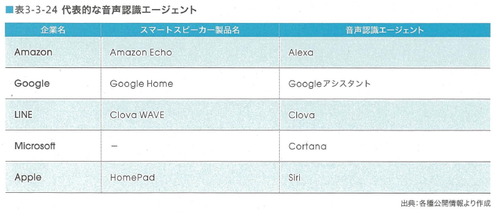
- スマートスピーカー業界で最も強力なポジションを築くのは、Amazonである。
- 特徴は、エコシステムの構築のためSDKを公開し、サードパーティのハードウェアメーカーヘサービスを開放している点である。
- アプリに相当する「スキル」の数は、グローバルでは2017年11月末で約2万4,000に達する。
- 日本国内で、AmazonEchoが発売された時の国内のスキル数は265だったが、2018年1月17日の時点では450を突破したと発表されている。
- スキルの種類や提供企業は多彩であり、メディア、エンターテインメント、交通（航空、鉄道、バスなど）、旅行サービス、食品デリバリー、銀行、保険会社などがある。
- 2017年8月に、AlexaとMicrosoftCortanaの連携が発表され、2018年8月にプレビュー版が公開となり、オフィス分野との連携も進むと考えられる。
- 音声認識は、自動車でも活用が進む。運転中に、モニターに視線をそらしたり手で入力を行うことなく、安全に情報を得たり音楽をかけたりできるため、音声との親和性が高い。
- 自動車メーカーは、ドライバーと車がコミュニケーションするスマートカーの開発を進めており、トヨタ自動車、日産自動車らが相次いでAlexaの導入を進める。
- 2018年2月現在、すでに日産のEVリーフの充電状況やバッテリ状態、エアコン、充電の操作を行うスキルが提供されている。
- これらのスマートスピーカーの役割は、音声による「対話」より、音声を使った「操作」が主体となる。
- 現時点では、人の会話を理解し、対話が行えるほどの自然言語処理能力はないが、アプリや家電の操作、ニュースや天気の確認、銀行口座残高の確認など、エージェントヘの指示を理解する能力は一定のレベルに達している。
- スマートスピーカーの登場によって、機械とのインターフェースが「声」になる傾向は加速すると予想され、これはAIの利用シーンを大きく拡大する可能性がある。
- コンシューマ一向けのスマートスピーカーからスタートしたが、将来的にはオフィス内や接客用途など商用での幅広い展開や、「操作」だけではなく「会話」を行える技術の高度化が予想される。
- 3.4 海外における利用動向
- 3.4.1 製造業における利用動向
- 取組み事例：Siemens
- 3.4.2 自動車産業における利用動向
- 3.4.3 インフラにおける利用動向
- 3.4.4 農業における利用動向
- 3.4.5 健康・医療・介護における利用動向
- 3.4.6 エネルギー分野における利用動向
- 3.4.7 教育における利用動向
- 3.4.8 金融業における利用動向
- 3.4.9 物流における利用動向
- 3.4.10 流通業における利用動向
- 3.5 AI導入予算・AI市場の規模
- 3.5.1 AI導入予算の規模
- 3.5.2 AI市場の規模
- (l)AIに関わる製品・サービス市場
- ① AIソフトウェア製品・サービスの世界市場
- ②日本のAI市場
- 富士キメラ総研によると2016年度は、大手ITベンダーや専業ベンダーが、自社で培ったAI関連技術をソリューションとして体系化し、それをもとに、多くの実証実験(PoC)が開始された年になった。続く2017年度はAIの本格運用に向けた導入期になったという。
- 今後実証実験が進むにつれ実稼働に移行する案件が増加すると見込まれ、2019年度から2021年度にかけて市場は成長期を迎えると予測する。
- 図3-5-3の左図のとおり、2016~2030年度までのAIのシステムやサービスの売上市場規模は2016年度の約2,700億円から2021年度の約1兆1,000億円に伸長すると見込まれており、2030年度には2兆250億円規模に達する見込みである[1l
- ■図3-5-3Al市場とシステム別市場予測
- 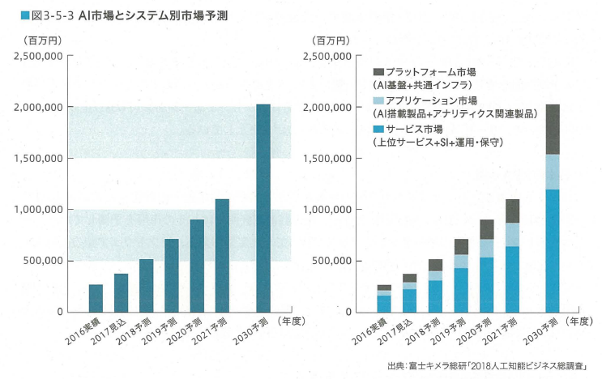
- 図3-5-3の右図は市場をサービス市場(SI;システムインテグレーション）、運用保守、上位サービスなど）、アプリケーション市場（アナリティクス関連製品やAI搭載製品など）、プラットフォーム市場(AI基盤や共通インフラなど）に分け、その推移を推定したものである。
- まずサービス市場は、全体の6割程度を占めるSIがその中心であることは変わらず、そのまま市場が拡大するとみており、AI実装に向けたコンサルティングや導入検証を経て、AI環境の本格的な構築が進むと予想している。
- 次にアプリケーション市場は、クラウド化が進むと予測している。
- 2016年度はデータマイニング、テキストマイニングなどアナリティクス関連製品が中心であったが、今後は営業支援システム、デジタルマーケティングなど、クラウド(Saas)化が進んでいるAI搭載製品の伸長が進むとみている。
- その結果、2016年度のクラウド利用の割合はアプリケーション市場全体の30%程度で、残りはソフト導入であったが、2030年度にはクラウド利用が約60%とソフトウェア導入の割合と逆転するとみている。
- なお、2016年度には、全体の16%であったアプリケーション市場は、2021年度には21%まで増加すると予測している。
- またプラットフォーム市場も、クラウドやAPIで提供されるAI/コグニティブサービスに対する需要が高まっている。
- 2016年度は、クラウドでの利用がPoCなど小規模にとどまり、実稼働基盤としてはハードウェア／ソフトウェアを自ら導入してオンプレミスで構築するケースが多くみられた。将来的には機械学習やディープラーニングなど高演算処理が可能なクラウド(PaaS)が普及し、その利用が8割弱となるとみている。
- ③ロボティクス関連の世界市場
- ④ 日本のRPA市場
- ロボットによる、主にホワイトカラーの従事してきた業務を効率化・自動化する取組みをRPA(Robotic Process Automation)と呼び、矢野経済研究所では、その市場を予測している。
- 従来ホワイトカラーがPCのキーボードやマウスで行ってきた定型作業を、ソフトウェア型の仮想ロボットに記憶・代行させることが可能になる。ここでは、RPAに関わるツールやコンサルティングサービス、システム開発・保守・メンテナンスなどのシステム・サービス市場を対象とする。
- 上記の産業用ロボット、対話型ロボットなど、ハードウェア型のロボットは含めていない。
- 図3-5-4のとおり2017年には132億円の市場が、2021年に621.3億円へと成長する見込みとしている。
- (2) Al利用による経済効果
- ここではAI利用によって生じる経済効果についての3つの調査結果概要をまとめる。
- Accentureの調査によれば、企業がAIを最大限に活用することで2035年までに収益を平均で38%向上できる可能性がある。
- 企業のAI活用が進むことで、先進12カ国（日本、米国、フィンランド、英国、スウェーデン、オランダ、ドイツ、オーストリア、フランス、ベルギー、スペイン、イタリア）における16の業界（情報通信、製造、金融サービス、卸売・小売、運輸・倉庫、専門サービス、ヘルスケア、建設、農林水産、宿泊・飲食、水道・電気・ガス、アート・エンターテインメント、福祉サービス、公共サービス、教育、その他サービス）で、新たに年間14兆ドルの粗付加価値(GVA:GDP―税＋補助金）の創出が可能になると予想している。
- なお、2035年までの世界各国のGVA成長率を倍増させるという予想も示されているが、その中でも日本は3倍以上の伸びとなっている（図3-5-5)。
- ■図3-5-5Alによる主要国のGVA成長率の増加
- 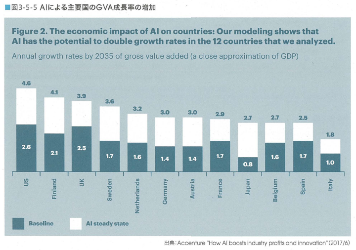
- PricewaterhouseCoopers (英国、PwC)の調査i,66によると、AIにより世界のGDPは2030年には14%以上増加(15.7兆ドル増加）し、中国では26.1% (7兆米ドル相当）、北米では14.5%(3.7兆米ドル相当）の増加になるという可能性が示されている。
- マッキンゼー・グローバル・インステイテュートは、AIがビジネスにどのような影響を及ぼすかを航空会社、Eコマースなど19の産業分野の400事例を分析,67し、年平均3兆5,000億ドル~5兆8,000億ドルの経済的価値を創出すると予測した。
- 特にインパクトが大きい産業分野としては旅行業や小売業が上がっている（図3-5-6)。また、調査事例の69%がディープニューラルネットワークの活用により成果を向上可能と述べている。
- ■図3-5-6Alが与える産業ことのインパクト（年間）
- 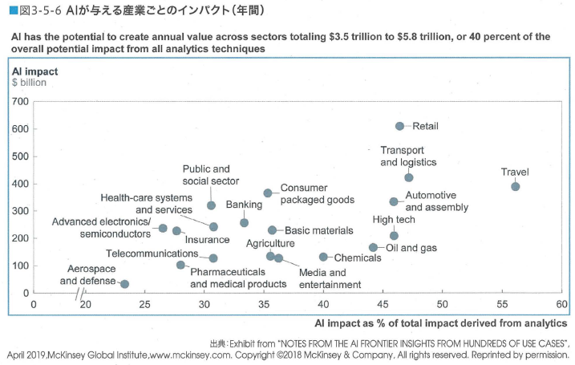
- 3.6 今後の展望
- 本章で示すように、各産業分野においてのAI利用は着実に進展しており、実証実験レベルのみならず、多くの実用化事例も見られる。
- 注目分野である自動運転に関しては、国内外で積極的な取組みが進んでおり、政府も支援している。
- 今後、安全についての検証性や説明性、社会の受容性などの課題解決を行い、実用化を進めていく必要がある。
- 国別の状況を見ると、中国のAIへの取組み姿勢が顕著であり、AIベンチャーの勃興や中国政府のAI産業に対する積極的な支援策などにより、米国を追い越す勢いである。対して日本はAI分野において米中に大きく水をあけられている状況といえる。
- 国内外のAI市場に関しては、昨年に比べやや緩やかではあるが、依然として高率の伸びを見せており、今後も有望な市場と考えられる。
- なお、IPAがユーザー企業に対して行ったアンケート（資料A企業におけるAI利用動向アンケート調査）では、AIの導入目的について効率化や生産性向上が上位となっており、収益向上への期待がうかがえる一方、実際の導入状況は導入済みが3.1%、実証実験中が7.1%と低く、導入への慎重姿勢も見受けられる。
- AIを適用する業務分野については、社内業務・一般業務から、コールセンター・問合せ対応、データ分析の高度化、営業・マーケティングなど幅広いニーズが挙げられている。
- AI導入の課題としては、「AIについての理解が不足している」が突出しており、ユーザー企業のAIリテラシー向上の必要性が明らかになっている。
- 今後もAIの国内外／産業別のAI利用状況を調査し、経年比較・分析を行うことにより、産業別・応用領域別のAIの社会実装状況の把握、実装課題の抽出、世界における日本のAI産業の立ち位置の明確化などを行っていくことが必要である。
- 特集 データで見る中国のAI動向
- 1. 世界におけるAIの動向と躍進する中国
- 2. 中国人工知能市場規模
- 3. 中国のAIリーディングカンパニー
- 4. 中国の有力AIベンチャー企業
- 5. 個別技術分野ごとの有力企業
- 6. 産業応用分野ごとの有力企業
- 7. AIに関する中国政府の制度、政策
- 8. 人材育成政策
- 9. 倫理的問題及び安全性への対応
- 資料A 企業におけるAI利用動向アンケート調査
- A.1 調査目的及び調査概要
- A.2 回答企業の属性
- A.3 AIの利活用状況
- A.4 導入目的
- A.5 AIを適用する業務分野
- A.6 活用中／検討中のAI技術
- A.7 AIを導入／検討する上での課題
- A.8 AIが解決すると期待する社会的課題
- A.9 AIに対する懸念点
- A.10 公的機関への要望
- A.11 AIへの関心、活用に関する意見
- 【column04】日本の人工知能／辻井潤一